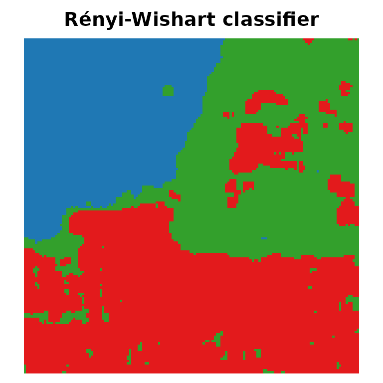

The divergence-based classifiers of Ferreira, Coelho and Nascimento
(2021) represent each pixel by the model fitted to its neighbourhood and
assign it to the class whose model is the closest according to a
divergence (Kullback-Leibler, Jeffreys, Bhattacharyya or Rényi).
SITSAR provides them as an R6 class
(DivergenceClassifier) and as the parsnip
model divergence_classifier(), so they plug into
tidymodels workflows.
library(SITSAR)
library(parsnip)
library(recipes)
library(workflows)
library(rsample)
library(tune)
library(yardstick)Features
sar_features() computes the local statistics used by
both engines: the Gaussian features (mean_*,
cov_*) and the complex Wishart features (c11,
c12_re, c12_im, …).
img <- SARImage$new(SanFrancisco150, looks = 4)
feats <- sar_features(img, window = 5)
feats$class <- factor(as.vector(SanFrancisco150_gt),
labels = c("ocean", "vegetation", "urban"))
dim(feats)
#> [1] 22500 21
set.seed(123)
split <- initial_split(feats, prop = 0.02, strata = class)
train <- training(split)
test <- testing(split)
nrow(train)
#> [1] 448A parsnip model
spec <- divergence_classifier(divergence = "renyi", order = 0.5, kind = 3) |>
set_engine("wishart")
spec
#> Divergence Classifier Model Specification (classification)
#>
#> Main Arguments:
#> divergence = renyi
#> order = 0.5
#> kind = 3
#>
#> Computational engine: wishart
rec <- recipe(class ~ ., data = train) |>
update_role(row, col, new_role = "id")
wf <- workflow(rec, spec)
fitted <- fit(wf, data = train)
pred <- augment(fitted, test)
accuracy(pred, truth = class, estimate = .pred_class)
#> # A tibble: 1 × 3
#> .metric .estimator .estimate
#> <chr> <chr> <dbl>
#> 1 accuracy multiclass 0.932
conf_mat(pred, truth = class, estimate = .pred_class)
#> Truth
#> Prediction ocean vegetation urban
#> ocean 5802 88 0
#> vegetation 7 6207 1385
#> urban 0 10 8553Tuning the order of the Rényi divergence
spec_tune <- divergence_classifier(divergence = "renyi", order = tune()) |>
set_engine("wishart")
set.seed(1)
folds <- vfold_cv(train, v = 3, strata = class)
res <- tune_grid(workflow(rec, spec_tune), resamples = folds,
grid = data.frame(order = c(0.1, 0.5, 0.9)),
metrics = metric_set(accuracy, kap))
collect_metrics(res)
#> # A tibble: 6 × 7
#> order .metric .estimator mean n std_err .config
#> <dbl> <chr> <chr> <dbl> <int> <dbl> <chr>
#> 1 0.1 accuracy multiclass 0.866 3 0.0182 pre0_mod1_post0
#> 2 0.1 kap multiclass 0.798 3 0.0268 pre0_mod1_post0
#> 3 0.5 accuracy multiclass 0.926 3 0.00815 pre0_mod2_post0
#> 4 0.5 kap multiclass 0.888 3 0.0123 pre0_mod2_post0
#> 5 0.9 accuracy multiclass 0.969 3 0.00427 pre0_mod3_post0
#> 6 0.9 kap multiclass 0.952 3 0.00643 pre0_mod3_post0
best <- select_best(res, metric = "accuracy")
best
#> # A tibble: 1 × 2
#> order .config
#> <dbl> <chr>
#> 1 0.9 pre0_mod3_post0Classification map
final <- finalize_workflow(workflow(rec, spec_tune), best) |> fit(train)
map <- predict(final, feats)$.pred_class
plot_map(matrix(as.integer(map), 150), main = "Rényi-Wishart classifier",
palette = c("#1f78b4", "#33a02c", "#e31a1c"))
kappa_statistics(SanFrancisco150_gt, matrix(as.integer(map), 150))
#> # A tibble: 1 × 5
#> kappa variance std_error overall_accuracy n
#> <dbl> <dbl> <dbl> <dbl> <dbl>
#> 1 0.940 0.00000396 0.00199 0.961 22500Comparing Gaussian and Wishart features
grid <- expand.grid(engine = c("gaussian", "wishart"),
divergence = c("kl", "jeffreys", "bhattacharyya", "renyi"),
stringsAsFactors = FALSE)
grid$accuracy <- mapply(function(eng, dv) {
f <- workflow(rec, divergence_classifier(divergence = dv) |> set_engine(eng)) |>
fit(train)
accuracy_vec(test$class, predict(f, test)$.pred_class)
}, grid$engine, grid$divergence)
grid
#> engine divergence accuracy
#> 1 gaussian kl 0.9330673
#> 2 wishart kl 0.9610466
#> 3 gaussian jeffreys 0.8204245
#> 4 wishart jeffreys 0.9336568
#> 5 gaussian bhattacharyya 0.8162525
#> 6 wishart bhattacharyya 0.9324324
#> 7 gaussian renyi 0.8162525
#> 8 wishart renyi 0.9324324Reference
Ferreira, J. A., Coelho, H. and Nascimento, A. D. C. (2021). A family of divergence-based classifiers for polarimetric synthetic aperture radar (PolSAR) imagery vector and matrix features. International Journal of Remote Sensing, 42(4), 1201–1229. https://doi.org/10.1080/01431161.2020.1826060